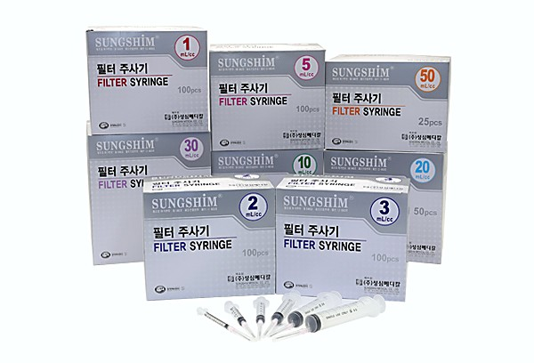

FILTER SYRINGE
The filter syringe is a sterile medical device built with a filter attached directly to the syringe, used for filtering drawn-up medication before it is administered. The integrated filter reduces particulates of glass, rubber, and other contaminants larger than 5 microns from the injection fluid.
Engineered for consistent performance, these syringes support safer preparation of injectable medication in hospitals, clinics, and reseller channels.

- Reduces particulates of glass, rubber, and other contaminants larger than 5 microns from the injection fluid
- Filter is attached directly to the syringe for filtering the injection fluid
- Available in capacities from 1 mL to 50 mL
- Offered in FS-P, FS-PWO, FS-S, FS-SWO, FSU-S, and FSU-SWO product variants per capacity
The attached 5-micron filter reduces particulates of glass, rubber, and other contaminants in the injection fluid before administration.
| Capacity | Product Name | Inner Box | Carton Box |
|---|---|---|---|
| 1 mL/cc | FS-P | 100 pcs | 1,800 pcs |
| FS-PWO | |||
| FS-S | |||
| FS-SWO | |||
| FSU-S | |||
| FSU-SWO | |||
| 2 mL/cc | FS-P | 100 pcs | 2,400 pcs |
| FS-PWO | |||
| FS-S | |||
| FS-SWO | |||
| FSU-S | |||
| FSU-SWO | |||
| 3 mL/cc | FS-P | 100 pcs | 2,400 pcs |
| FS-PWO | |||
| FS-S | |||
| FS-SWO | |||
| FSU-S | |||
| FSU-SWO | |||
| 5 mL/cc | FS-P | 100 pcs | 1,800 pcs |
| FS-PWO | |||
| FS-S | |||
| FS-SWO | |||
| FSU-S | |||
| FSU-SWO | |||
| 10 mL/cc | FS-P | 100 pcs | 1,200 pcs |
| FS-PWO | |||
| FS-S | |||
| FS-SWO | |||
| FSU-S | |||
| FSU-SWO | |||
| 20 mL/cc | FS-P | 50 pcs | 800 pcs |
| FS-PWO | |||
| FS-S | |||
| FS-SWO | |||
| FSU-S | |||
| FSU-SWO | |||
| 30 mL/cc | FS-P | 50 pcs | 600 pcs |
| FS-PWO | |||
| FS-S | |||
| FS-SWO | |||
| FSU-S | |||
| FSU-SWO | |||
| 50 mL/cc | FS-P | 25 pcs | 400 pcs |
| FS-PWO | |||
| FS-S | |||
| FS-SWO | |||
| FSU-S | |||
| FSU-SWO |
For other sizes, please contact us.
Watch how the built-in 5 µm filter stops particulates before they reach the barrel. Use the steps below to explore each stage.
Medication is drawn up through the needle channel toward the barrel.
-
Preparation
- Inspect the packaging for any damage, missing parts, or expired products before use.
- Ensure the user fully understands the purpose, instructions, and safety precautions prior to use.
-
Usage Procedure
- Wash hands thoroughly before handling the syringe and open the packaging.
- Draw the required medication into the syringe through the attached filter to remove particulates larger than 5 microns.
- Remove any air bubbles by gently tapping the syringe and adjusting the plunger.
- Administer the filtered medication as directed by the healthcare professional.
- After use, dispose of the syringe following facility protocol.
- This product is intended for single use only, do not reuse.
- Dispose of used syringes in a sealed, puncture-resistant container and follow proper disposal regulations.
Warnings
- Using the wrong syringe size or applying the product incorrectly may lead to dosing errors or injury.
- Users must fully understand proper usage and precautions before use.
Precautions
- Use only for its intended purpose.
- Do not use if packaging is damaged or contaminated.
- Do not use if the filter or any component is damaged.
- Open immediately before use; do not pre-fill for extended storage.
- This is a single-use sterile product; reuse is strictly prohibited.
- This product is a medical device; carefully read the usage notes and usage method before use.
This product is a filter syringe: a syringe with an attached filter, designed for filtering drawn-up medication (the injection fluid) before it is administered.
- Shelf Life: 3 years from the date of manufacture
- Packaging: Individual sterile packaging by listed size and product variant
- Storage Conditions: Store at room temperature; avoid exposure to direct sunlight, heat, and humidity
Note: This is a medical device. Please read all instructions and safety guidelines carefully before use.